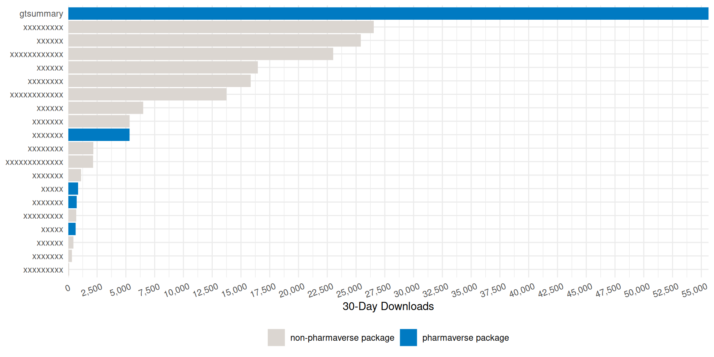
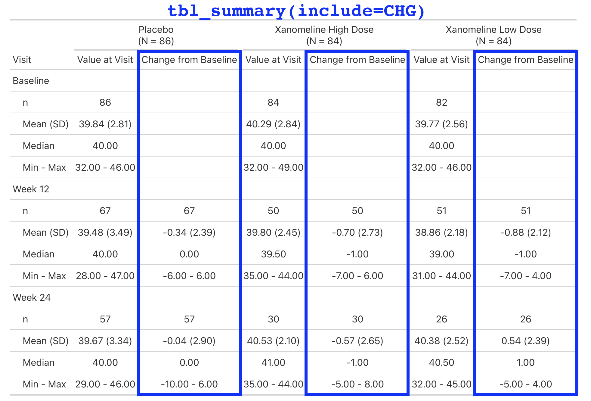

Clinical Reporting with {gtsummary}
Pharmaverse Workshop
Questions
Please ask questions at any time!

How it started
Began to address reproducibility issues while working in academia
Goal to build a package to summarize study results with code that was both simple and customizable
How it’s going
The stats
- 2,300,000+ installations from CRAN
- 1,200 GitHub stars
- 1,500 citations in peer-reviewed articles
- 50 code contributors
Won the 2025 Brian Bole Award of Excellence from R in Pharma
Won the 2021 American Statistical Association (ASA) Innovation in Programming Award
Won the 2024 Posit Pharma Table Contest


{gtsummary} + formulas
This syntax is also used in {cards}, {cardx}, {crane}, and {gt}.

Named list are OK too! label = list(age = "Patient Age")
Where are the ARDs?
ARDs are the backbone for all calculations in gtsummary
Every gtsummary table saves the ARDs from each calculation

$tbl_summary
# An ARD data frame: 27 × 12
group1 group1_level variable variable_level context stat_name stat_label stat fmt_fun warning error gts_column
<chr> <list> <chr> <list> <chr> <chr> <chr> <list> <list> <list> <list> <chr>
1 ARM2 Placebo AGE <NULL> summary median Median 76 <fn> <NULL> <NULL> stat_1
2 ARM2 Placebo AGE <NULL> summary p25 Q1 69 <fn> <NULL> <NULL> stat_1
3 ARM2 Placebo AGE <NULL> summary p75 Q3 82 <fn> <NULL> <NULL> stat_1
4 ARM2 Xanomeline AGE <NULL> summary median Median 77 <fn> <NULL> <NULL> stat_2
5 ARM2 Xanomeline AGE <NULL> summary p25 Q1 71 <fn> <NULL> <NULL> stat_2
6 ARM2 Xanomeline AGE <NULL> summary p75 Q3 81 <fn> <NULL> <NULL> stat_2
7 <NA> <NULL> AGE <NULL> attribu… label Variable … Age <fn> <NULL> <NULL> <NA>
8 <NA> <NULL> AGE <NULL> attribu… class Variable … numeric <NULL> <NULL> <NULL> <NA>
9 <NA> <NULL> ARM2 <NULL> attribu… label Variable … ARM2 <fn> <NULL> <NULL> <NA>
10 <NA> <NULL> ARM2 <NULL> attribu… class Variable … character <NULL> <NULL> <NULL> <NA>
# ℹ 17 more rowsExtension Package:{crane} 
The first function we added to {crane} was tbl_roche_summary(): a thin wrapper for gtsummary::tbl_summary().
Continuous variables default to
continuous2.tbl_summary(missing*)arguments have been changed totbl_roche_summary(nonmissing*).- We highlight non-missing counts over missing counts, which are the default in {gtsummary}
Counts represented by
0 (0%)print as0.
Extension Package:{crane}
What else is in {crane}?
Lab values are summarized by visit and include the change from baseline.
This is a simple table that is just a tbl_merge() of the AVAL summary and the CHG summary.
But the general structure appears enough times in our catalog, we make it simple for our programmers to create.
What else is in {crane}?

What else is in {crane}?

What else is in {crane}?

What else is in {crane}?

cardinal collaboration 
The cardinal initiative is an industry collaborative effort under the pharmaverse.
The site includes examples for building ARDs and tables from the FDA Standard Safety Tables and Figures Integrated Guide using {cards} and {gtsummary}.
Thank you

2,300,000+ installations — go build something cute.